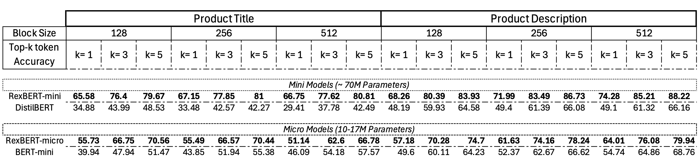

RexBERT: Encoders for a brave new world of E-Commerce
Sep 20, 2025
Rahul Bajaj, Anuj Garg
01
TL;DR
We present RexBERT,
a family of domain-specialized text encoders for e-commerce, trained on 2.3T+ tokens, that combine a
fully open-data, reproducible pre-training recipe with the architectural advances of
ModernBERT. To catalyze
further research, we release Ecom-niverse, a 350-billion token corpus drawn from diverse e-commerce
text sources. Our methodology is model agnostic: the same procedure can be used to pre-train any
context-specific encoder and deploy it out of the box on downstream tasks. Across a suite of
state-of-the-art baselines, domain-specialized encoders trained with our recipe consistently
outperform general purpose encoders that are 2–3× larger, underscoring the value of high quality
in-domain data and targeted pre-training.
02
Introduction
Modern NLP discourse is dominated by large generative models, yet encoder-only architectures
remain indispensable for production systems where latency, cost, and stability are paramount. In
e-commerce, compact encoders quietly power mission-critical workflows such as high-recall search and
re-ranking, product–product and query–product matching, attribute extraction and normalization,
catalog deduplication, and policy/compliance routing delivering consistent quality under stringent
throughput and memory budgets.
In this work, we introduce RexBERT, a BERT-style encoder that advances the state of the art on our
e-commerce benchmarks, together with a modular, domain-agnostic data curation pipeline for
pre-training. We target e-commerce as a proving ground because of its large economic impact and
fine-grained semantic distinctions that stress-test representation quality.
03
Data Curation Methodology
We are releasing Ecom-niverse:
a new e-commerce specific dataset with 350B+ tokens. The dataset is constructed by refining a broad
web dataset to isolate content with retail or shopping context. This curated corpus is intended for
continual pre-training of LLMs and other Encoder only models so they better understand product
descriptions, prices, and other commerce related text.
Our starting point is the FineFineWeb
dataset, an open-source web-scale corpus that organizes CommonCrawl web data into fine-grained
topical domains. FineFineWeb consists of over 4.4 trillion tokens of English web text categorized
into ~50 domains.
We leverage FineFineWeb as the raw data source. Each entry in FineFineWeb is a text snippet
(document or paragraph) accompanied by metadata including its assigned domain label. Not all these
domains are relevant to retail commerce, so the first step is to identify which domains likely
contain e-commerce content.
Figure 1. The discipline-specific data curation pipeline: FineFineWeb → domain focus
→ LLM labels → fastText → validated subset.
We identified 9 E-commerce overlapping domains which have significant amount of relevant tokens
but required filtration. Below table list domains and their filtered size.
Table 1. The nine e-commerce overlapping domains and their filtered size.
Domain
Size (GBs)
Hobby
114
News
66
Health
66
Entertainment
64
Travel
52
Food
22
Automotive
19
Sports
12
Music and Dance
7
Additionally, there are 6 more domains which had almost complete overlap and were picked directly
out of FineFineWeb.
Table 2. The six domains with almost complete overlap, picked directly out of FineFineWeb.
Domain
Size (GBs)
Fashion
37
Beauty
37
Celebrity
28
Movie
26
Photo
15
Painting
2
Figure 2. Ecom-niverse by source domain, in GB: the nine FineFineWeb domains that were filtered for e-commerce content (Table 1) and the six picked directly (Table 2).
04
Training Methodology
We train the model with a masked language modeling (MLM) objective and a curriculum that grows
sequence length and steadily introduces domain-specific distributions. At a high level, MLM lets the
encoder attend bidirectionally and learn fine-grained token dependencies: a random subset of tokens
is replaced with [MASK], random tokens, or left intact, and the model predicts the
original values. We use dynamic, span-aware masking rather than static, per-token masking so the
model learns to reconstruct contiguous fragments (e.g., entities, attributes, or clauses), which
better captures real document structure.
Our training comprises of three major phases:
Figure 3. The three training phases, drawn to scale by tokens: 1.7T of general pre-training at shorter contexts, 250B of context extension to 8K, and about 350B of annealing toward Ecom-niverse at 8K. Block height marks the context window and is schematic.
Phase 1: Pre-training (1.7T tokens)
We establish broad linguistic and world knowledge using a diverse mixture: curated web text,
books, code, technical papers, and multilingual content (lightly). Shorter contexts speed up
convergence and stabilize optimization.
Key details
Higher stochasticity: higher dropout, larger masking variance, moderate temperature sampling
to flatten headroom across sources.
Span masking focuses on syntax and entity recovery; entity bias is low to avoid overfitting to
any domain early.
Regular eval on general MLM perplexity, natural language understanding (NLU) probes, and
factual slot recovery.
Why it matters
Short windows produce fast iterations, letting the model learn token level statistics and robust
attention patterns before we pay the quadratic attention cost of long sequences.
Phase 2: Context Extension (250B tokens)
We lengthen the window to 8K to model multi-section documents, specs, FAQs, contracts, and
research papers.
Stability contributions
Warm start from the final Phase-1 checkpoint; switch to RoPE with NTK-aware rescaling so prior
position embeddings remain usable at 8K.
Long-range masking: spans include cross-section boundaries and table/text boundaries so
attention learns to bridge headings, lists, and prose.
Packing & bucketing: sequences are bucketed by length and packed to >97% token
utilization, keeping effective batch size stable despite longer context.
Phase 3: Annealing (≈ 350B tokens, context 8k)
We specialize without forgetting. Starting from the
Phase-2 checkpoint, we anneal the
training distribution toward Ecom-niverse.
We perform Annealed domain specialization with rehearsal which interprets as using e-commerce
specific tokens domain alignment with regressing on learnings from Phase-1 and Phase 2.
What's different from ModernBERT
We train on only open datasets including e-commerce specific corpora.
Training data increased from 50B tokens to 350B tokens in Annealing phase.
In the decay phase, the masking ratio is reduced to 10%-15% (down from 30%).
Local and global RoPE scaling factors are set to the same value.
05
Model Details
Model Sizes
We train four size-scaled variants of RexBERT to span common latency & accuracy trade-offs
encountered in production systems.
Table 3. The four size-scaled variants of RexBERT.
Parameter
17M (Micro)
68M (Mini)
150M (Base)
400M (Large)
Layers
7
19
22
28
Hidden Size
256
512
768
1024
Intermediate Size
384
768
1152
2624
Attention Heads
4
8
12
16
Learning Rate
3e-3
3e-3
8e-4
5e-4
Weight Decay
3e-4
3e-4
1e-5
1e-5
06
Performance Evaluation
We conduct a comprehensive evaluation on e-commerce specific datasets and tasks that mirror
effectiveness of the models in the domain.
Token Classification
The study utilized textual data assets from the
Amazon ESCI dataset to benchmark model
performance. Evaluations were conducted using the 'Product Title' and 'Product Description' fields
with three distinct context window sizes: 128, 256, and 512 tokens. A uniform masking rate of 15% of
the total tokens was applied to each input instance. Predictive accuracy was subsequently quantified
using top-k metrics, with k ∈ {1, 3, 5}, to assess the model's ability to correctly
predict each masked token.
With 2–3x fewer parameters, RexBERT surpasses the performance of the ModernBERT series.
Figure 4. Masked-token accuracy on Amazon ESCI product titles and product
descriptions at context lengths 128, 256 and 512. Each bar stacks top-1 (darkest, at the bottom),
top-3 and top-5 (lightest, at the top) accuracy.
Additionally, smaller RexBERT models:
RexBERT-Mini and
RexBERT-micro outperform their size
counterparts DistilBERT and BERT-mini by huge margins.

Figure 5. Top-k token accuracy of the small models: RexBERT-mini against
DistilBERT, and RexBERT-micro against BERT-mini.
RexBERT modelcomparison model
Figure 6. Top-1 masked-token accuracy from Figures 4 and 5, one pair of models per panel, all on one scale. Top row: a RexBERT model against the ModernBERT one size larger. Bottom row: RexBERT-mini and RexBERT-micro against baselines of their own size.
Semantic Similarity
To assess how well general purpose language models transfer to a downstream semantic similarity
task in e-commerce, we finetune them as text embedding models and evaluate their ability to recover
similarity structure under a limited-data regime.
We use the Amazon ESCI dataset, which annotates query-product pairs with four relevance
categories: Exact, Substitute, Complement, and Irrelevant. Rather than the original re-ranking
objective, we construct a semantic similarity view by mapping labels to target similarity scores:
Exact → 1.00
Substitute → 0.66
Complement → 0.33
Irrelevant → 0.00
This monotonic mapping preserves the ordinal structure of ESCI while yielding dense supervision
suitable for embedding learning. We filter to English and form training instances as paired texts
(query-product title) with the corresponding target score.
Models are trained with
CoSENT loss
or AnglE Loss, which optimizes pairwise orderings in
cosine-similarity space. Intuitively, CoSENT encourages a higher cosine similarity for pairs with
larger target scores and enforces margins between positives and negatives, making it a natural fit
for metric learning with graded labels. We operate in a limited-data setting to test sample
efficiency: training uses a
'small' set of ESCI.
We compute Spearman’s rank correlation (ρ) between the model’s predicted cosine similarities and
the target scores on a heldout test set. Spearman ρ evaluates whether the model preserves the
correct ordering of semantic relatedness, which is the principal objective for downstream retrieval
and clustering. We also monitor convergence behavior (stability of ρ across checkpoints) to gauge
robustness in low resource training.
We evaluate a family of RexBERT models across sizes alongside competitive baselines in a
comparable parameter range, including
EmbeddingGemma-300M.
All models are fine-tuned under the same data, objective, and evaluation pipeline to ensure a fair
comparison.
Figure 7. Parameters against Spearman correlation on the English ESCI similarity
task.
Across the English ESCI similarity task, the RexBERT series consistently outperforms other models
within a similar parameter budget. Notably,
RexBERT-large achieves the strongest
performance, surpassing EmbeddingGemma-300M
under identical training and evaluation conditions. These results indicate that the RexBERT
architecture, when trained with CoSENT on ESCI, learns an embedding space that better reflects graded
semantic relations in e-commerce text, reinforcing strength of our pre-training. We are making the
Evaluation Dashboard available
publicly.
Following the evaluation protocol outlined in the
ModernBERT paper, we trained
RexBERT-Base and
ModernBERT-Base on the
MS MARCO dataset
(1.25M pairs) for both general retrieval and semantic similarity. On the
MTEB v2 (English) benchmark, the two models achieved
comparable performance. These results indicate that our strategy of constructing a balanced,
multi-domain corpus enriched with context specific token distributions improves performance on
context-dependent tasks while maintaining SOTA results on general benchmarks. Due to limited
computational resources, we were unable to extend experiments to the full RexBERT model family.
07
Usage Example
from transformers import AutoTokenizer, AutoModel
# Load encoder for classification/embeddings
tokenizer = AutoTokenizer.from_pretrained("thebajajra/RexBERT-base")
model = AutoModel.from_pretrained("thebajajra/RexBERT-base")
def predict_masked_token(text):
inputs = tokenizer(text, return_tensors="pt")
with torch.no_grad():
outputs = model(**inputs)
# Get predictions for [MASK] tokens
mask_indices = torch.where(inputs["input_ids"] == tokenizer.mask_token_id)
predictions = outputs.logits[mask_indices]
# Get top 5 predictions
top_tokens = torch.topk(predictions, 5, dim=-1)
return [tokenizer.decode(token) for token in top_tokens.indices[0]]
# Example
masked_text = "Our healing jelly is clinically proven to protect, help heal, and lock in [MASK] for dry, cracked skin"
predictions = predict_masked_token(masked_text)
print(f"Predictions: {predictions}")
08
Acknowledgement
We gratefully acknowledge Orion et al.,
Seq vs Seq: An Open Suite of Paired Encoders and Decoders.
Since our Phase-1 and Phase-2 procedures closely mirror their methodology, we initialized our training
from the final Phase-2 checkpoint provided in that suite and then conducted Phase-3 training on our
Ecom-niverse corpus. We thank the authors for making their checkpoints and
code available for us to bootstrap
our work.
09
References
Seq vs Seq: An Open Suite of Paired Encoders and Decoders — Weller et al., arXiv 2025.
DOI: 10.48550/arXiv.2507.11412
Smarter, Better, Faster, Longer: A Modern Bidirectional Encoder for Fast, Memory Efficient, and
Long Context Finetuning and Inference — Warner et al., ACL 2025.
DOI: 10.18653/v1/2025.acl-long.127
Originally published on
Hugging Face on Sep 20, 2025.
![Flow diagram titled Discipline Specific Data Curation Pipeline. Raw source: FineFineWeb, 4.4T tokens in about 50 domains. Step 1, domain focus: select relevant domains. Step 2, sampling: 100K to 500K items per domain. Step 3, LLM labels: Phi-4 marks each item relevant or not, with a QA check using Llama3-70B and a loop to refine prompts and labels if quality drops. Step 4: train a fastText classifier per domain. Step 5: validate on hold-out or cross-validation. Step 6, apply at scale: filter on a predicted-score threshold. Output: validated domain subset.](img/data-curation-pipeline.png)

![Scatter plot titled Pareto Efficiency: Parameters vs Spearman. Horizontal axis: parameters in millions, 0 to 400. Vertical axis: Spearman correlation, 0.25 to 0.45. From lowest to highest score: Ettin-encoder-17M, RexBERT-micro, Ettin-encoder-68M, ModernBERT-base, ModernBERT-large, RexBERT-mini, RexBERT-base, EmbeddingGemma-300M and RexBERT-large, which is highest at about 0.46. A shaded region marks the area above the line from RexBERT-micro to RexBERT-large; RexBERT-mini and RexBERT-base lie inside it, the Ettin and ModernBERT models lie below it.](img/esci-pareto-spearman.png)